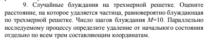
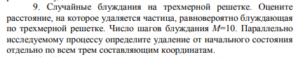

Лабораторная работа №7
Моделирование случайных блужданий
Каждое задание предполагает разработку программной
имитационной модели случайного блуждания, с помощью которой
могут быть получены необходимые результаты.
1) В результате проведения определенного количества экспериментов требуется построить статистическое распределение исследуемого параметра (гистограмму и эмпирическую функцию распределения)
2) определить целесообразность аппроксимации полученного распределения одним из известных законов (нормальным, экспоненциальным, логарифмически-нормальным и др.).
Теоретическая часть для данной лабораторной работы представлена в учебнике [1] на стр. 117–124. 
1) В результате проведения определенного количества экспериментов требуется построить статистическое распределение исследуемого параметра (гистограмму и эмпирическую функцию распределения)
2) определить целесообразность аппроксимации полученного распределения одним из известных законов (нормальным, экспоненциальным, логарифмически-нормальным и др.).
Теоретическая часть для данной лабораторной работы представлена в учебнике [1] на стр. 117–124. 